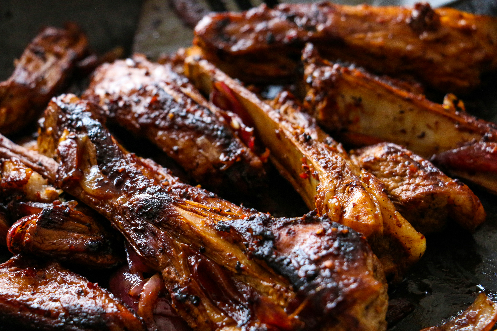

Pork Ribs

Description
Oven baked ribs are almost too easy to make. Seriously everyone, sometimes we make a recipe and wonder how it could possibly taste so good when there was zero effort required. It feels like we cheated. That being said, we'll take the easy wins and we will enjoy this ridiculously easy recipe. You don't need any special gadgets or tools, all you need are your ribs and a handful of pantry staples. Get ready to sit back and relax and let your oven do all of the real work!
Ingredients
- 2 racks baby back ribs
- 1 tablespoon smoked paprika
- 1 teaspoon salt
- 1 teaspoon black pepper
- 1 teaspoon onion powder
- 1 teaspoon garlic powder
- 1 teaspoon ground mustard
- 1 cup barbecue sauce
Steps
-
Preheat oven to 275 degrees Fahrenheit. Line a baking sheet or roasting pan with aluminum foil.
-
Remove the membrane from the back of the ribs. Just slide your fingers around the side to loosen it up and rip it right off. Use a paper towel to provide a better grip if slippery.
-
In a small bowl, stir together the ingredients for the dry rub, paprika, salt, pepper, onion powder, garlic powder, and ground mustard. Rub this mixture generously over the outside of the ribs to coat. Place seasoned ribs in a single layer onto prepared baking sheet or roasting pan.
-
Cover pan with aluminum foil. Cook in the preheated 275F degree oven for 3 1/2 to 4 hours until ribs are tender.
-
Remove ribs from oven and remove aluminum foil. Brush barbecue sauce onto ribs.
-
Place the baking sheet or roasting pan back into the oven underneath the broil setting. Broil for 3-5 minutes until the barbecue sauce starts to bubble and caramelize.